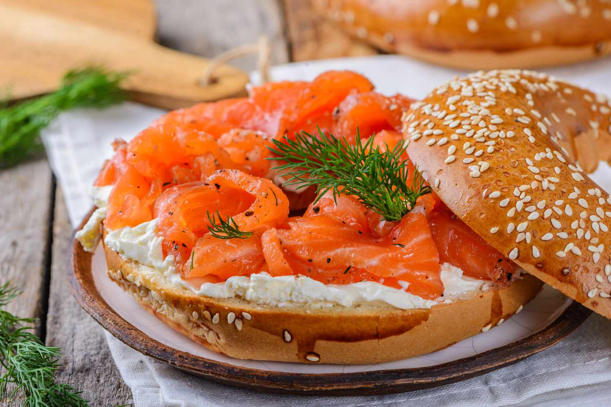

Gravlax Recipe
Description
Gravlax is the Scandinavian-style cold-cured salmon appetizer served thinly sliced with a mustard-dill sauce drizzled on top.
Although it may seem like a complex process, gravlax is surprisingly easy to make at home with this recipe. The curing mix,
which includes salt, sugar, and pepper, is enough for 4 to 6 pounds of salmon. You can reduce or increase the quantities
for smaller or larger fillets.
Ingredients
- Salmon Fillets - 2 (2- to 3- pound), skin-on
- Aquavit - 1/4 cup; Vodka can also be used
- Sea Salt - 1/3 cup; fine
- Granulated Sugar - 1/3 cup
- Black Pepper - 1 tablespoon; freshly ground
- Dill - 1/4 cup; coursely chopped; optional
Steps
- Gather the ingredients.
- Rinse the salmon fillets and pat them dry thoroughly.
- Use tweezers or pliers to pull out any pin bones, if necessary.
- Drizzle the aquavit or vodka evenly over the flesh of each fillet.
- In a small bowl, combine the salt, sugar and pepper.
- Divide the mixture into 3 even piles within the bowl.
- Divide one of the thirds of curing mix in half and place on a rimmed baking sheet or baking pan in the shape of one of the fillets.
- Lay a fillet skin-side down on the mixture. Spread a third of the curing mixture on the flesh of that fillet.
- Spread the remaining third of the curing mixture on the flesh side of the other fillet. Sprinkle the dill, if using, over both fillets.
- Lay the second fillet flesh to flesh on the first fillet. Sprinkle the remaining curing mixture over the skin of the top fillet
- Cover the fillets and baking sheet or pan with foil or plastic wrap. Place a cutting board or second baking sheet on top of the covered fish and top it with something heavy (cans, pots, or pans) to weigh the fish down. Place it all in the fridge and let chill for about 12 hours or overnight.
- Remove from the fridge, unwrap, and discard the accumulated liquid in the pan. Turn over the fillets so the bottom one is on top.
- Cover the pan, weigh down the fish again, and return to the refrigerator. Let chill another 12 hours.
- The fish is now cured and ready to serve, but it will continue to benefit from another 12 to 24 hours of being weighed down and chilled, so feel free to repeat these steps a second time around.
- When ready to eat, pat dry, and thinly slice the gravlax against the grain using a very sharp knife.
- Serve and enjoy.
Other Recipes:
Back to Home